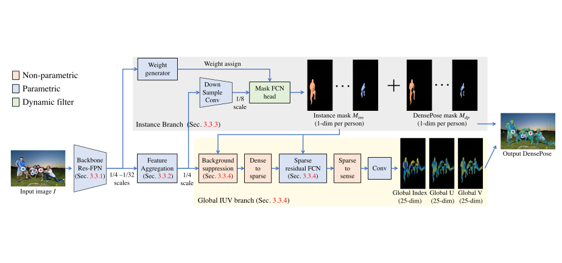
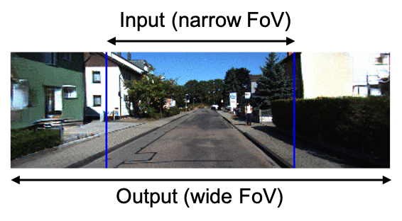
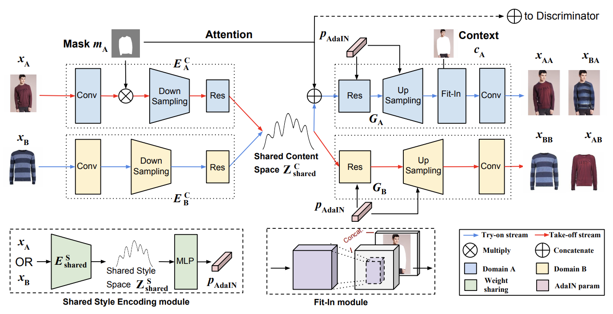

{kind=link}
Liqian Ma (马里千)
Algorithm Head
ZMO AI Inc.
Email: LiqianMa dot Scholar at outlook dot com
|
|||||||
I am the algorithm head at ZMO.AI and lead the R&D team for AIGC. I obtained my PhD degree at VISICS group of KU Leuven supervised by Prof. Luc Van Gool. Before this, I obtained my Master's and Bachelor's degree from Peking University and South China University of Technology. My research goal is to develop a creative self-learning AI system. Currently, I am working on image/video understanding and synthesis. Please contact me if you are interested in collaboration or internship/fulltime positions.
News
[2022.08] Our paper "Controllable Radiance Fields for Dynamic Face Synthesis" is accepted by 3DV 2022.
[2022.08] Our paper "UNIF: United Neural Implicit Functions for Clothed Human Reconstruction and Animation" is accepted by ECCV 2022.
[2021.11] Our paper "Direct Dense Pose Estimation" is accepted by 3DV 2021.
[2021.02] Our paper "FoV-Net: Field-of-View Extrapolation Using Self-Attention and Uncertainty" is accepted by RA-L and ICRA 2021.
[2020.07] Our paper "Unselfie: Translating Selfies to Neutral-pose Portraits in the Wild" is accepted by ECCV 2020.
[2020.07] Our paper "Unpaired Image Shape Translation Across Fashion Data" is accepted by ICIP 2020 (best paper award finalist).
Publications
|  | Direct Dense Pose Estimation Liqian Ma, Lingjie Liu, Christian Theobalt, Luc Van Gool3DV, 2021 [Project] [Paper] [BibTex] |
|  | FoV-Net: Field-of-View Extrapolation Using Self-Attention and Uncertainty Liqian Ma, Stamatios Georgoulis, Xu Jia, Luc Van GoolRA-L & ICRA, 2021 [Project] [Paper] [BibTex] |
Unselfie: Translating Selfies to Neutral-pose Portraits in the Wild Liqian Ma, Zhe Lin, Connelly Barnes, Alexei A. Efros, Jingwan Lu,ECCV, 2020 [Project] [Paper] [ArXiv] [BibTex] |
|  | Unpaired Image Shape Translation Across Fashion Data Kaili Wang*, Liqian Ma*, José Oramas M., Luc Van Gool Tinne Tuytelaars(*denotes equal contribution) ICIP, 2020, Best Paper Awards Finalist [Paper] [BibTex] |
A Novel BiLevel Paradigm for Image-to-Image Translation Liqian Ma, Qianru Sun, Bernt Schiele, Luc Van GoolArXiv, 2019 [Paper] [ArXiv] [BibTex] |
Exemplar Guided Unsupervised Image-to-Image Translation with Semantic Consistency Liqian Ma, Xu Jia, Stamatios Georgoulis, Tinne Tuytelaars, Luc Van GoolICLR, 2019 [Project] [Code] [Paper] [ArXiv] [BibTex] |
Customized Multi-Person Tracker Liqian Ma*, Siyu Tang*, Michael J. Black, Luc Van Gool(*denotes equal contribution) Asian Conference on Computer Vision (ACCV Oral), 2018 [Paper] [BibTex] |
Disentangled Person Image Generation Liqian Ma, Qianru Sun, Stamatios Georgoulis, Luc Van Gool, Bernt Schiele, Mario FritzIn IEEE Conference on Computer Vision and Pattern Recognition (CVPR Spotlight), 2018 [Project] [Code] [Paper] [ArXiv] [BibTex] |
Natural and Effective Obfuscation by Head Inpainting Qianru Sun*, Liqian Ma*, Seong Joon Oh, Luc Van Gool, Bernt Schiele, Mario Fritz(*denotes equal contribution) In IEEE Conference on Computer Vision and Pattern Recognition (CVPR), 2018 [Code] [Paper] [ArXiv] [BibTex] |
Pose Guided Person Image Generation Liqian Ma, Xu Jia*, Qianru Sun*, Tinne Tuytelaars, Bernt Schiele, Luc Van Gool(*denotes equal contribution) In Neural Information Processing Systems (NIPS), 2017 [Project] [Code] [Paper] [ArXiv] [Slides] [BibTex] |
Orientation Driven Bag of Appearances for Person Re-identification Liqian Ma, Hong Liu, Liang Hu, Can Wang, Qianru SunArXiv, 2016 [Paper] [ArXiv] [BibTex] |
A novel hierarchical Bag-of-Words model for compact action representation Qianru Sun, Hong Liu, Liqian Ma,Neurocomputing, 2016 [Paper] [BibTex] |
Online person orientation estimation based on classifier update Hong Liu, Liqian Ma,In IEEE International Conference on Image Processing (ICIP Oral), 2015 [Paper] [BibTex] |
Body-structure based feature representation for person re-identification Hong Liu, Liqian Ma, Can Wang,In IEEE International Conference on Acoustics, Speech and Signal Processing (ICASSP), 2015 [Paper] [BibTex] |
Depth Motion Detection—A Novel RS-Trigger Temporal Logic based Method Can Wang, Hong Liu, Liqian Ma,IEEE Signal Processing Letters (SPL), 2014 [Paper] [BibTex] |
Academic service